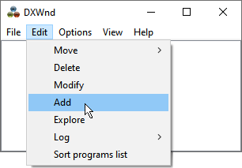
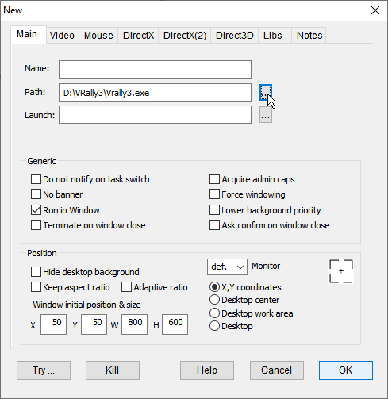
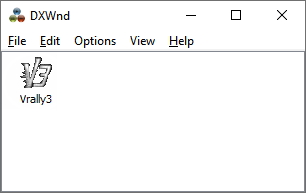
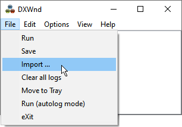
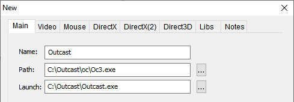
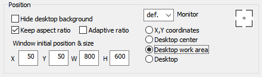
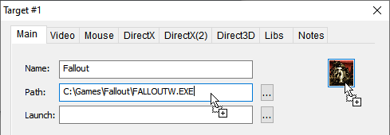
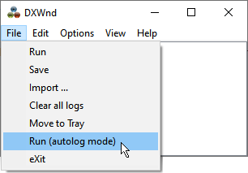

Adding a game to Dxwnd:
When you first start DxWnd you should see the following screen:

Now lets start by adding a path from your game's executable to DxWnd.
1. Click on Edit > Add and the following screen should appear:
(Or alternatively, you can simply drag & drop the game's executable file into the DxWnd main window).

2. Now click on the "..." button on the "Path:" field and navigate to your game's installation directory.
3. Navigate to your game executable (for example D:\VRally3\Vrally3.exe).
4. The game executable is now selected and if you click OK, a new entry will appear in the DxWnd main window for your game.

This is all that is needed to hook your game using DxWnd by the default options. If you then double-click on the created entry, the game should start in the default 800x600 window. However, you will probably want to customize your game window size and tweak some other options which we will cover later in this tutorial.
TIP: Once the game is configured in DxWnd you can also start the game from its normal shortcut (provided DxWnd is running in the background). This is especially useful when running Steam games that need to be started from the Steam interface.
Using a pre-made .dxw configuration file:

Another way to start using DxWnd is to import a pre-made configuration file for the game that you are about to run. To do this click on File > Import and navigate to the "exports" folder. From here select the name of the entry that corresponds to the name of the game you are about to run. For example V-Rally 3.dxw and click OK.
A new entry should now appear on the DxWnd main window. However, this entry will most likely not work before you update the path field to match the location of the game on your hard drive. To do this, select the entry and then choose Edit > Modify.
NOTE: Using a pre-made configuration for a game is useful when the game does not run with the DxWnd default settings. However these configurations may not always be up to date. A good tactic is to first try and manually add the game executable to DxWnd and if the game does not work properly, then try using the configuration files in the "exports" folder.
Using the Launch field:
Some games need a launcher executable to start the actual game. In these cases the "Launch:" field must be used to point to the launcher executable. For example, for the game "Outcast", the launcher is "Outcast.exe" and the main program is "Oc3.exe".

Please note that the launch field can't hold command line arguments for the game. To add command line arguments, you need to use the "Command line" field in the "Hook" configuration tab. For this purpose you need to enable the Expert mode first and read the hook help page.
Configuring the window size & position:
Now that we have the game running with the default settings we can start customizing the window size by going back to the "Main" tab (right-click on game entry and select Modify).
From here, it is possible to specify any required "Window initial position & size". If you are running an older game that had a low resolution like 640x480, a good quality can be achieved by doubling the window size to 1280x960. You can specify any window resolution you want but keep in mind that certain resolutions might produce a poor image quality.
By default, the option "X,Y coordinates" is selected and this option will obey your window position and resolution values.
By selecting the option "Desktop center" the position values are ignored and the window is always placed in the center of the screen.
If you choose the "Desktop work area" option, both window position and size will be ignored and the window will automatically use your desktop area without covering the task bar at the bottom.
Selecting the "Desktop" option will use the whole screen as if the game was running in fullscreen mode.
"Keep aspect ratio" is useful with "Desktop work area" and "Desktop" options and will ensure that the image maintains the proper aspect ratio.
"Hide desktop background" can be used to fill the desktop background with black color.
A fairly good option is to select the flags "Keep aspect ratio" and "Desktop work area":

See: Main > Position for more information.
Changing the path and/or icon of a configuration using Drag and Drop:

To update the path, simply drag and drop the executable over the "Path:" field.
To update only the icon to a different one, simply drag and drop the executable over the icon.
Getting technical support:
Running some programs can be a real challenge. You can get support for DxWnd configuration by writing on the SourceForge DxWnd forum.
It is important to give precise information about your problem. In general you need to specify at least the following elements:
1. the program title/name and (if relevant) version/patch/distribution.
2. if possible provide some screenshot (if relevant) describing the problem.
3. a description of your system (e.g., the operating system: Windows 7, Windows 10, etc.).
4. your DxWnd configuration. You can send the "dxwnd.ini" file or the exported configuration of the game.
5. if possible, the DxWnd log file "dxwnd.log" (see the Taking Logs tutorial).
You will soon learn how to use all functionalities of DxWnd available in Expert mode. But before that, the basic interface includes a "Run (autolog mode)" command that will set DxWnd to write a basic log file with no need of changing the configuration.

Basic troubleshooting:
Note that DxWnd currently supports only 32-bit executables.
If a game refuses to run with DxWnd, make sure to run DxWnd with administrators rights. Right click on "dxwnd.exe" and choose "Run as administrator". You should also make sure that the game executable you are about to run does not have any compatibility modes set. Right click on the executable and navigate to the "Compatibility" tab to make sure no options are selected there.
If the game exits when you resize or minimize the window, check that the DxWnd's "Main" tab option "Do not notify on task switch" is enabled.
If the game window is not scaling correctly, try enabling the "Libs" tab option "Scaled GDI calls".
If you want the mouse cursor to stay inside the game window, you can try setting the "Cursor Clipper" option to ON in the "Input" tab.
To improve the image quality especially when running a game in a custom resolution, you can use the filters available in the DirectX tab. See: DirectX > Filtering for more information.
GOG games may have troubles running through DxWnd. This is usually caused by custom wrapper .dll files that are shipped with GOG games. You may try to rename these .dll files in the game folder to disable them (e.g., "ddraw.dll"). In addition, DxWnd's "Compatibility" tab has the flags "Hook GOG libs" and "Bypass GOG libs" that may help with some games.